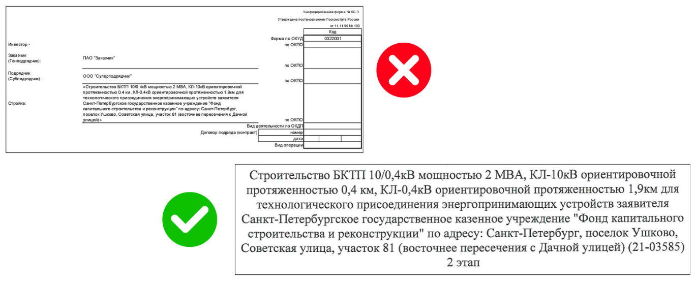

Проверяем смету

Этот урок может показаться непростым. Именно здесь чаще всего возникают ошибки, из-за которых ИД не принимают с первой попытки.
Представьте, вы передали в СДО ведомость объемов работ для формирования сметы. После подготовки сметы направляете её на проверку вместе с комплектом документации. Но уверены ли вы, что КС-2 соответствует вашей исполнительной документации? 90% отказов происходят именно на этом этапе.
Перед сдачей объемов обязательно проверьте смету. Инженер СДО редко бывает на объекте и может не знать всех особенностей строительства. Обычно смета формируется на основе согласованного ССР, и любые отклонения от него требуют обоснования и согласования.
При большом объеме и разнообразии работ в одном ССР может быть несколько расценок даже на разработку котлована или траншеи. Проверку я выполняю в таком порядке: факт на объекте → ИД → смета.
Как проверять смету
Наименование и нумерация
Проверьте титульный лист КС-2 и КС-3, он должен соответствовать наименованию из договора и АОСР.
Посмотрите на примере, как маленькая ошибка привела к отказу в приемке работ.

В этом выполнении сметчик решил не дописывать информацию об объекте полностью. Но бывает и так, что титульный лист ССР и договора различается. В таком случае проблему нужно решать по согласованию с заказчиком.
Далее проверьте нумерацию документов. Если по договору было несколько выполнений, нумерация КС-3 и КС-2 продолжается с учетом предыдущих.
КС-3 оформляются последовательно и отражают количество поданных выполнений. КС-2 нумеруются сквозным порядком — в одной КС-3 может быть несколько КС-2, и их нумерация продолжается до полной сдачи работ.
Пример
Если первое выполнение оформлено по КС-3 №1 с приложением КС-2 №1, №2 и №3, то следующее выполнение должно соответствовать КС-3 №2 с комплектом КС-2 №4, №5 и далее. Если нумерация начнется заново, это будет считаться грубой ошибкой. В таком случае я не смогу принять смету.
Расценки и коэффициенты
Теперь задача более сложная, но не менее важная. Обратите внимание на примененные расценки и объемы. Я проверяю соответствие каждой расценки, количество работ на схемах, коэффициент на материалы в смете и объем материала в паспорте.
Выполните упражнение и проверьте, насколько корректно сметчик составил КС-2. Используйте «Метод СК», не упускайте детали.
Источник и ограничения: для просмотра требуется сеть и доступ к внешней площадке.
Обратите внимание на один из самых спорных коэффициентов в сметах — «удорожание». Его можно применять к отдельным видам работ или ко всей КС-2.
Сметчик имеет право использовать этот коэффициент только при наличии его в ССР. Если он предусмотрен, но не соответствует реальной ситуации на объекте, выполнение не будет принято.
Такое удорожание — зона особой ответственности, и к нему мы подходим максимально внимательно.
Перейдем к практике. Это замечание появилось на одном из моих объектов. Подрядчик месяц отказывался менять изначальный вариант и чуть не сорвал срок ввода объекта. Определите, как правильно закрыть объем, если работы начались до даты введения коэффициента, а закончились после.
Отдельно стоит упомянуть коэффициент на временные здания и сооружения.
Если при строительстве выполнялись работы по устройству строительного городка, но в ССР для них нет отдельного раздела, их можно учесть коэффициентом на ВЗиС.
Однако такие удорожания нужно подтверждать документально. Даже если на объекте фактически есть городок и ограждения, без подтверждающих документов коэффициент не будет принят.
Попробуйте доказать наличие ВЗиС.
Источник и ограничения: для просмотра требуется сеть и доступ к внешней площадке.
Все позиции, которые есть в смете, должны подтверждаться ИД.
Я привела примеры самых популярных ошибок при формировании ИД. Теперь ваш комплект готов к передаче на проверку. Вы точно ничего не забыли? Направляйте документы только с сопроводительным письмом с указанием даты.
Мне часто приходят письма:
- без указания объекта;
- с одной ИД без КС;
- без сопроводительного письма.
Такие письма СК не берет в работу и подрядчик рискует остаться без проверки и оплаты за выполненные работы.
{kind=link}